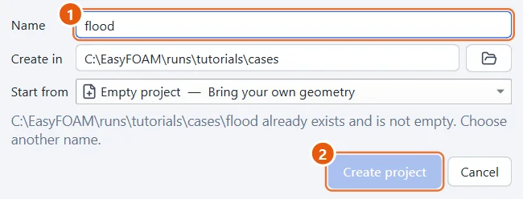
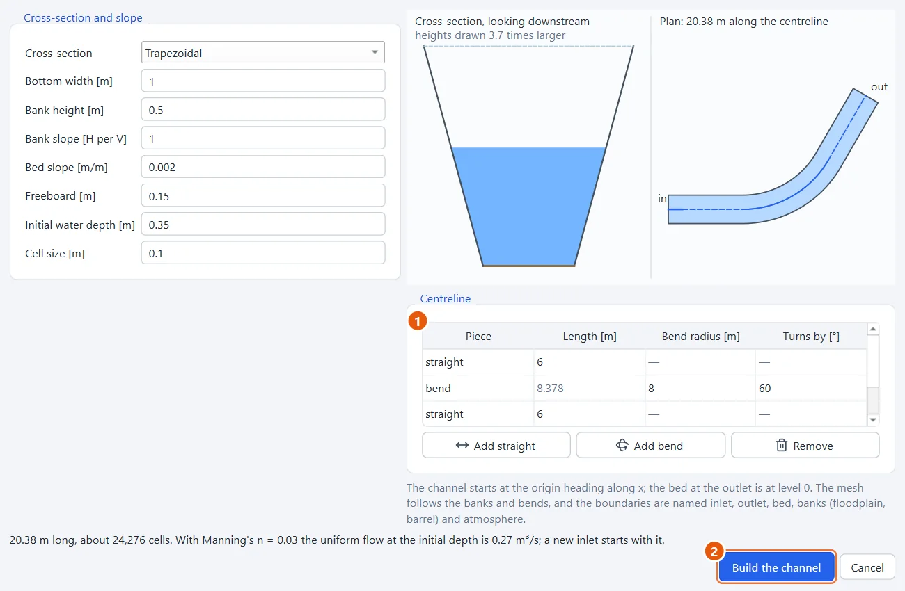
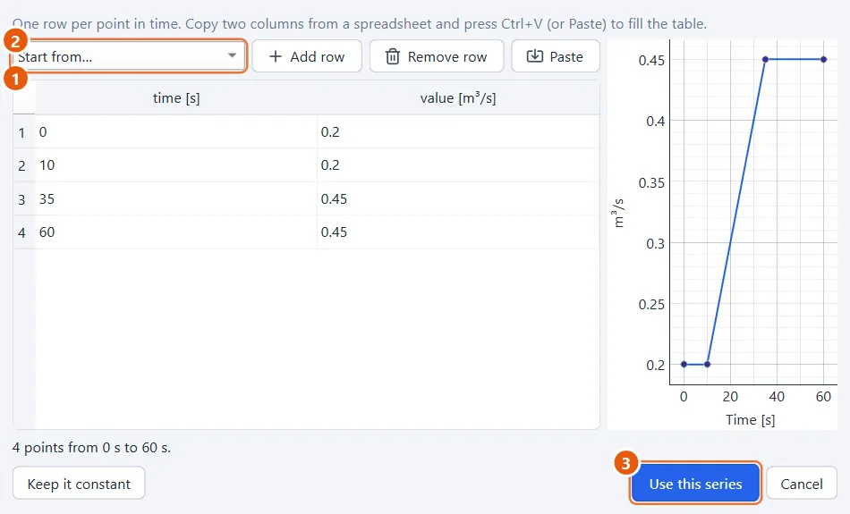
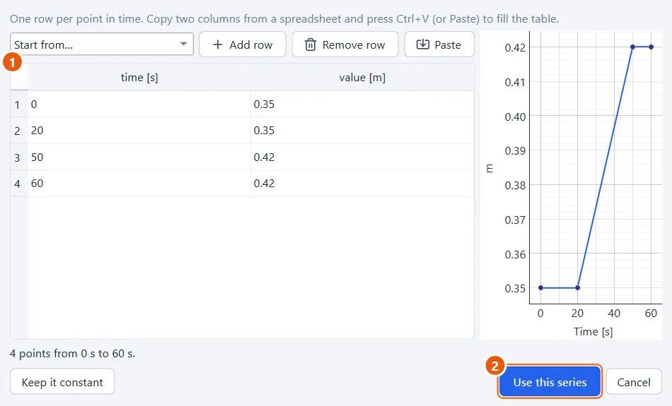
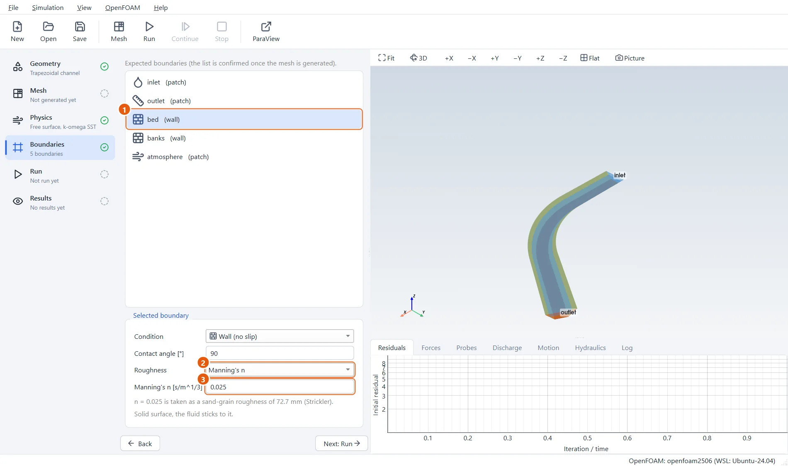
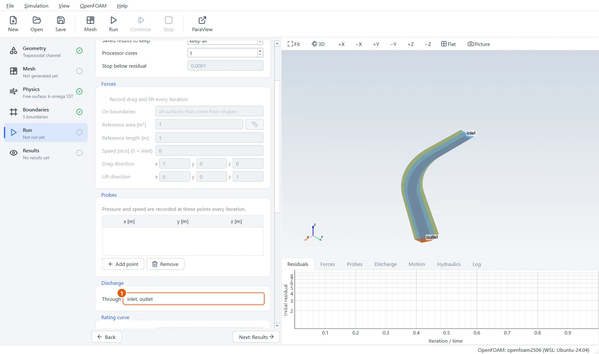
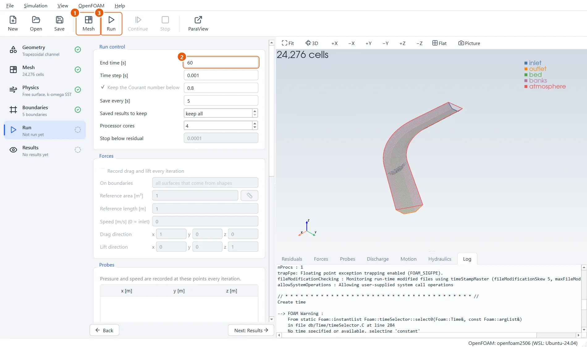
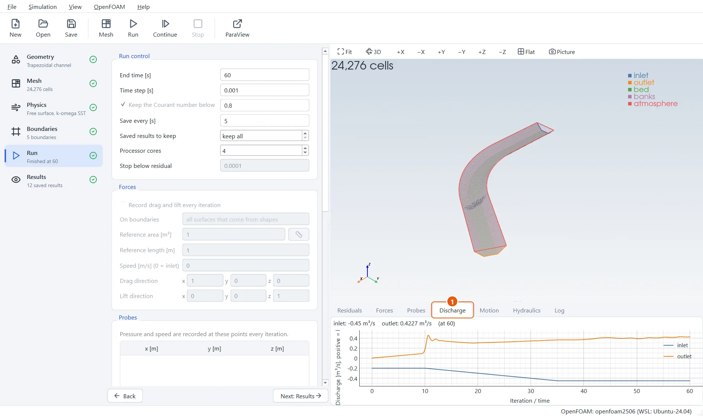
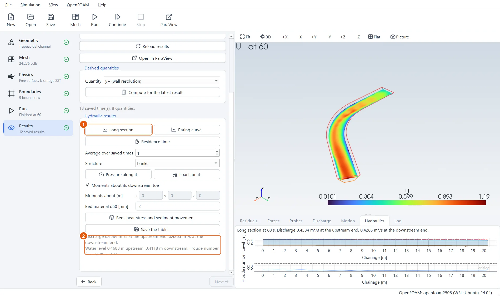
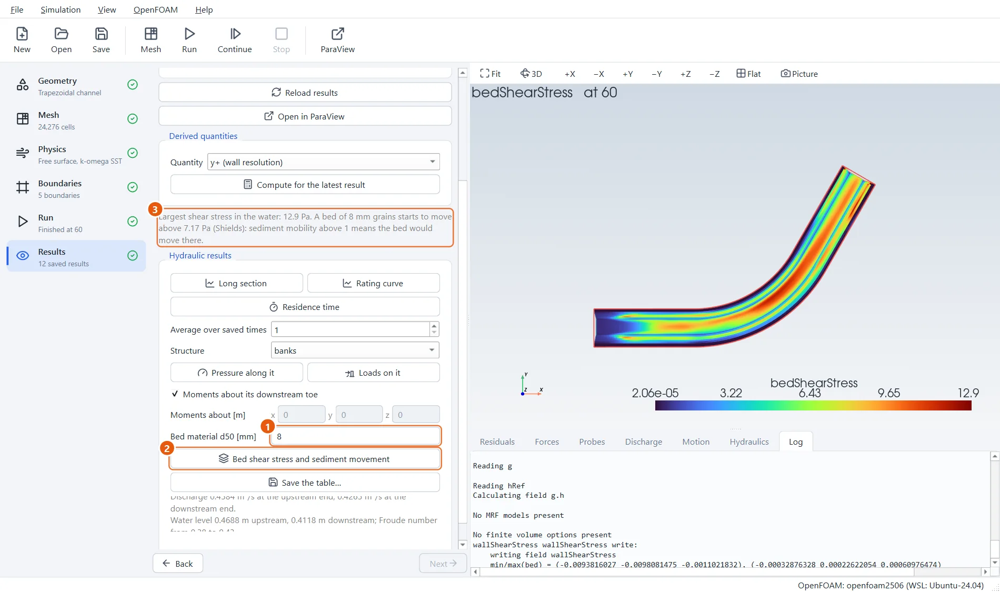

Tutorial 18 of 19
A flood through a bend
Send a flood hydrograph down a channel while the river downstream rises, follow the water round the bend and see where the bed would start to move.
Rivers are rarely steady. A flood arrives as a hydrograph, a discharge that rises and falls, and the river downstream rises with it, which backs the water up. This tutorial gives the inlet of a channel a flood hydrograph and its outlet a tailwater that rises in time, both as tables of time and value. At the peak it looks at the water round the bend and at the shear stress on the bed: where it exceeds what the bed material can take, the bed would start to move.
It uses the channel of the Build a channel with a bend tutorial: a trapezoid with a 1 m bed and a 60° bend.
What you will learn
- give an inlet a flood hydrograph and an outlet a tailwater that changes in time
- compare the discharge coming in and going out
- draw the long section at the peak of the flood
- work out the bed shear stress and where a gravel bed would move
Computer time: about a minute for the mesh and two or three minutes for the run, on four cores.
1An empty project
Start a new, empty project and call it flood.
- Type
flood. - Click Create project.


2The channel
In Geometry, press Channel… and build the same channel as in the Build a channel with a bend tutorial: a trapezoid with a 1 m bed and 0.5 m banks at 1 to 1, a bed slope of 0.002, 6 m straight, a 60° bend of 8 m radius and 6 m straight, with water 0.35 m deep at the start.
- The centreline: straight
6, a bend of radius8turning60°, straight6. - Press Build the channel.


3A flood comes down
In Boundaries, pick inlet and press Flow changes in time…. Type the hydrograph as a table of times and discharges: 0.2 m³/s for the first 10 seconds, rising to 0.45 m³/s at 35 s and staying there. Between the rows the discharge changes in a straight line. You can also paste two columns from a spreadsheet, or start from a ready-made flood shape.
- Times and discharges:
00.2,100.2,350.45,600.45. - Start from… offers a flood hydrograph, steps or a slow rise.
- Press Use this series.


4The river downstream rises
Pick outlet and press Level changes in time…. The river downstream rises from 0.35 m to 0.42 m between 20 and 50 seconds, as the flood reaches it.
- Times and levels:
00.35,200.35,500.42,600.42. - Press Use this series.


5Rough bed and banks
Give bed and banks a Manning's n of 0.025: an earth channel.
- The boundary bed (do the same for banks).
- Roughness: Manning's n.
- Manning's n:
0.025.


6Discharge at both ends
In the Run step, record the discharge through both ends of the channel.
- Discharge through:
inlet, outlet.


7Run a minute
Make the mesh and run a minute of the flood on four cores.
- Click Mesh in the toolbar (or press F5).
- End time:
60s. - Click Run in the toolbar (or press F6).


8The flood passes
The Discharge tab shows the water coming in (negative: into the channel) and going out. The inflow follows the hydrograph exactly. The water in the channel starts still, so for the first seconds little leaves while the flow gets going; after that the outflow follows the flood, a little below the inflow while the water in the channel rises with it.
- Open the Discharge tab.


9At the peak
In Results, press Long section: it is drawn for the latest saved time, at the peak of the flood. The stations follow the curved centreline; the water surface and the energy line fall gently round the bend.
- Press Long section.
- Discharge, depths and the Froude number at the peak.


10Where the bed would move
Give the size of the bed material, 8 mm gravel, and press Bed shear stress and sediment movement. OpenFOAM works out the shear stress the water puts on the walls and EasyFOAM colours the bed with it, seen from above. The text gives the largest stress and the stress at which 8 mm gravel starts to move (Shields). Choose sedimentMobility under Quantity: above 1, the bed would move.
- Bed material d50:
8mm. - Press Bed shear stress and sediment movement.
- The largest shear stress, and when the gravel moves.

